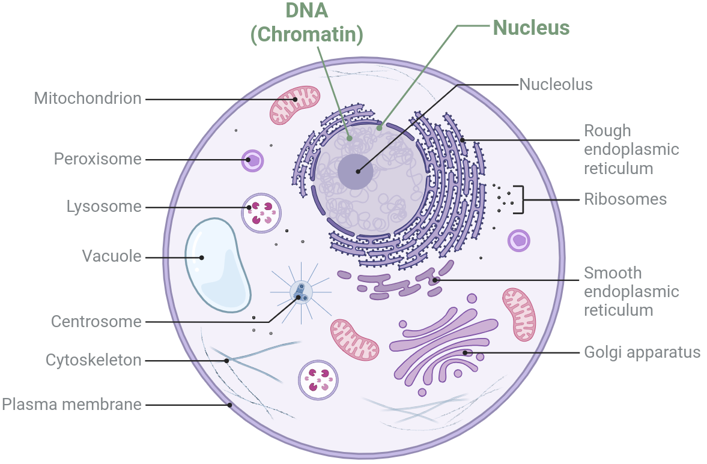
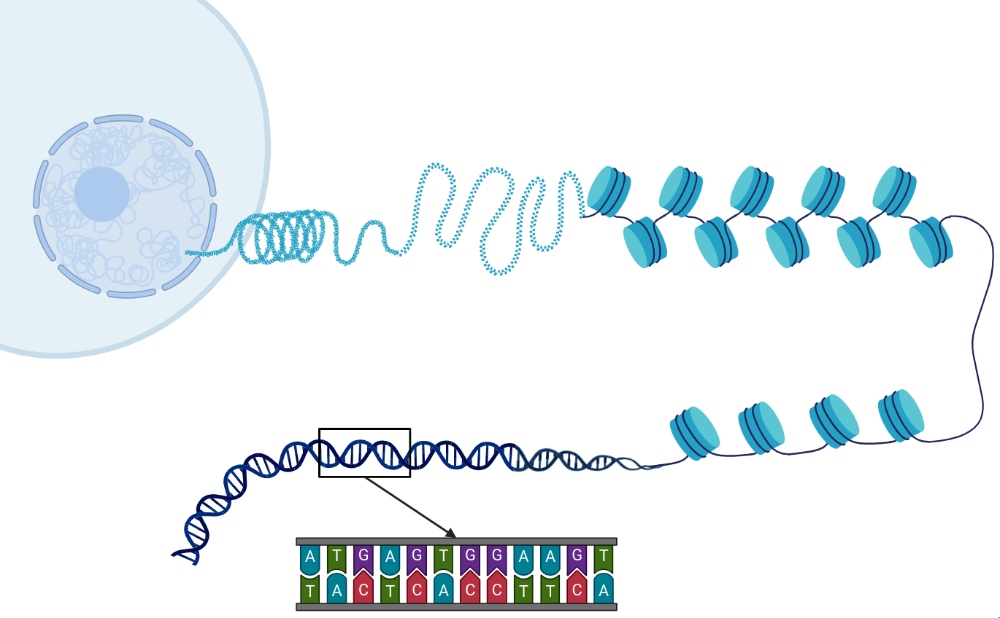
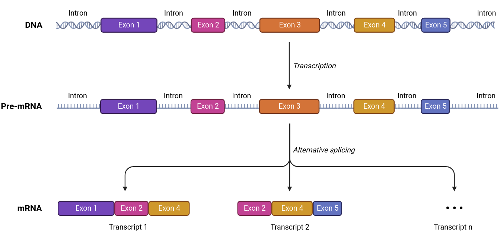
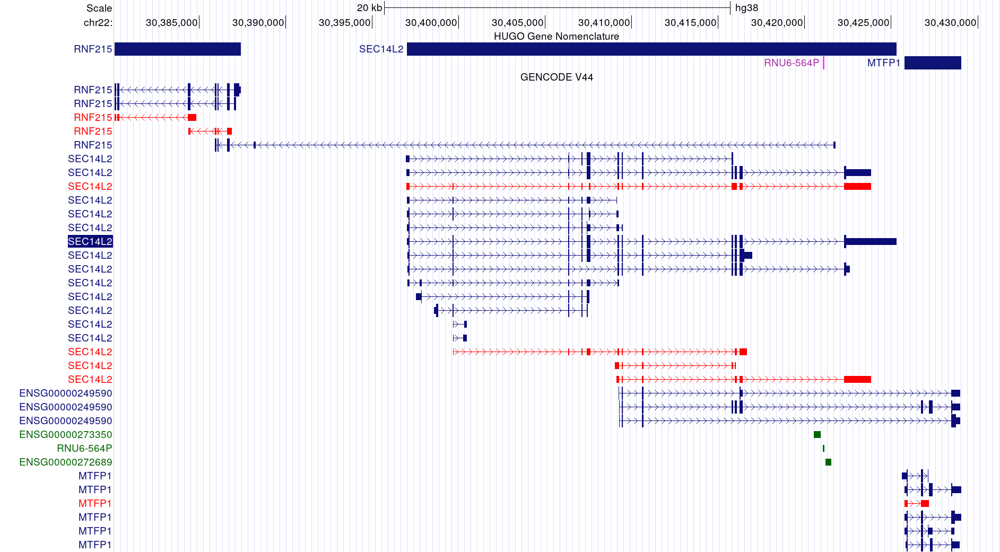
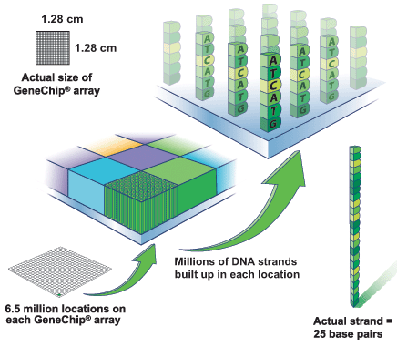

ALIGN Capacity Building
The What, Why and How of Transcriptomics
August 2, 2023
Acknowledgement of Country
I would like to acknowledge that today I’m presenting this topic from Kaurna Country.
I acknowledge the deep feelings of attachment and relationship of the Kaurna people to their Place.
I also pay respects to the cultural authority of Aboriginal and Torres Strait Islander peoples from other areas of Australia online today, and pay my respects to Elders past, present and emerging.
Who Am I?
- Oldest person in Black Ochre Data Labs but still an ECR
- Unintentionally took the “winding path” approach to my PhD (2008-2018)
- Undertaken in a T Cell / Autoimmunity Research Group
- Developed a novel Bayesian Statistical model for alternate transcript detection (using microarrays)
- Co-ordinator of the University of Adelaide Bioinformatics Hub (2014-2020)
- Analysed dozens of RNA-Seq datasets (+ more)
- Developed multiple training workshops and undergrad/postgrad courses
- Massive R nerd (5 Bioconductor packages)
Who Am I?
- First discovered microarrays and R in 2002
- Most statistical understanding has been learned through this lens
- Primary training is in biology (e.g. genetics, biochemistry)
- Majority of experience in bulk tissue (i.e. not single-cell)
- Also spent two years researching ER-dependent Breast Cancers
- Looking at Transcription Factors and DNA state (ChIP-Seq)
- Data Integration (RNA-Seq, ChIP-Seq, HiC etc)
Why Transcriptomics?
Why?
- Transcriptomics is essentially the analysis of RNA
- Provides insight into a highly dynamic component of biology
- Long history of identifying biomarkers and establishing mechanisms
- Is essentially a hypothesis-generating step
- Often need to test hypotheses using conventional experimental approaches
Why?
PROPHECY \(\implies\) Preventing Renal OPHtalmic Events in CommunitY
- Key focus is Type 2 Diabetes and complications (CVD and CKD)
- Multiple ’omics layers: DNA (Genomics), DNA-methylation (EpiGenomics), protein (Proteomics) etc
- Whole blood \(\implies\) large immune component (“white blood cells”)
- Can we see markers of the different stages of Type 2 Diabetes
(i.e. complications developing)
- By integrating with other -omics layers:
- Can we establish clear hypotheses into underlying mechanisms?
\(\implies\) clinical intervention
- Can we establish clear hypotheses into underlying mechanisms?
How Does Biology Even Work?
DNA

- Most are familiar with DNA
- Directly inherited from parents
\(\implies\) unique people - Stays in the nucleus
- The same in every cell (roughly)
- Generally static (until cell division)
DNA

Each chromosome is a string of millions of nucleotides
- 4 nucleotides (or bases): A, C, G, T
- Double-stranded molecule, i.e. double helix
- Adds incredible stability
- Provides error handling mechanism
- Amazing amount of 3D structure & packaging
- Only forms the classic shape during cell division
DNA
We often think of there being one unique reference sequence
- This is very far from reality
- Each copy of Chromosome 1 is different to the other copy within each of us
- Both copies are (essentially) the same between all of our cells
- Same for all other chromosomes (1-22 + X)
- Scale this out to millions of people…
- Some regions are relatively invariant (needed for survival)
DNA
- Unique combinations of bases are ours and ours alone, for each of us
- Inherited from parents (+ a few spontaneous changes)
- We often refer to these unique sequences as variants
- Single nucleotides (SNVs)
- Missing or extra nucleotides (InDels)
- Larger structural variants (SVs) and repetitive elements (REs)
- Collections of variants within a population \(\implies\) genetic diversity
The Central Dogma of Biology
DNA is essentially a giant book of instructions
- Some regions are known as genes
- These are transcribed into RNA
- Many RNA types (mRNA + miRNA, ncRNA, rRNA etc)
- mRNA molecules are translated into proteins
- Proteins do stuff i.e. pretty much everything
- Keratin \(\implies\) Hair structure
- Haemoglobin \(\implies\) Oxygen transport
- Antibodies \(\implies\) Detect alien molecules
Proteins
Proteins are the molecular machines that run our bodies
- Incredibly dynamic system
- Some are stable \(\implies\) Some degrade rapidly
- Each cell-type (e.g. neuron, skin cell) will make a different set of proteins
- Some structural proteins may be common between unrelated cell-types
- Proteins can be heavily modified
- Phosphorylation, Sumoylation, Ubiquitination etc
- Can be single molecules or bind to multiple partners
- Different functions or activities for every state
Proteins
Proteomics is the study of proteins
- Is very limited technique
- Tens of Thousands exist
- Can usually only identify hundreds (maybe 1-2000) from a sample
- We don’t understand much of the complexity
- Single modifications can have huge consequences
- Still a very immature field
- Technology is extremely variable and rapidly developing
What is Transcripomics?
Transcriptomics
Transcriptomics is the study of RNA molecules within a cell or tissue
- Not all genes are expressed in every cell
- ~60,000 annotated genes in the genome
- ~10-15,000 detectable genes in a given cell-type
- Transcriptomes are cell-type specific
- Related cell-types will often have great similarity, e.g. T-cell sub-types
- Often take a cell-line (or cell-type) and expose to a treatment
- Low variability \(\implies\) treatment response is easy(ish) to spot
Transcriptomics
- Transcriptomics is often an abundance-focussed analysis
- Differential Gene Expression
- Common early assumption \(\implies\) mRNA abundance reflects protein levels
- Is sometimes true …
- Many other types of RNA play key roles
- miRNAs degrade their target mRNAs
- lncRNAs can silence chromosomal regions (e.g. XIST)
- Shows an early visible response to stimuli
- Also represents a stable state of the cell
What is an RNA transcript?
- All known transcribed regions are defined as genes
- Transcribed from DNA \(\implies\) start to finish
- From the larger transcript:
- Introns are spliced out
- Exons form mature transcript

- Most genes are transcribed into multiple transcripts
- Different transcripts \(\implies\) Different proteins (or even other RNA)
SEC14L2: A Random Example
How Do We Study Transcriptomics
Early Gene Expression Approaches
- The first high-throughput platform was Microarrays
- 3’ Arrays (Affymetrix)
- Gene-centric approach
- Could analyse 10-15,000 genes
- Many statistical tools developed in this context
limmahas been maintained by Gordon Smyth (WEHI) for >20years

Microarrays

Known sequences at known locations

Labelled cDNA binds complementary target
Bulk RNA Sequencing
- Modern approaches involve sequencing the transcriptome
- Short Reads (Illumina) < 300bases: Quantitative
- Long Reads (Nanopore, PacBio); Semi-Quantitative
- Short reads still dominate
- Used in the PROPHECY transcriptomics layer
- Mature RNA transcripts may be short (8nt) or long (109,224nt)
Bulk RNA Sequencing
- All cells from each sample (or tissue) are lysed and RNA extracted
- RNA is fragmented (250-500bp)
- RNA Quality is assessed (RIN Score)
- RNA fragments are prepared for sequencing (library preparation)
- Converted to cDNA
- Add sequencing adapters
- PCR amplification
- Sequencing
How do we put this all back together and quantify?